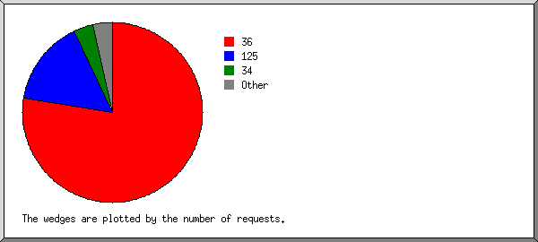
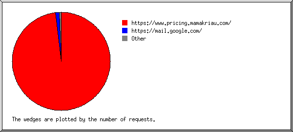
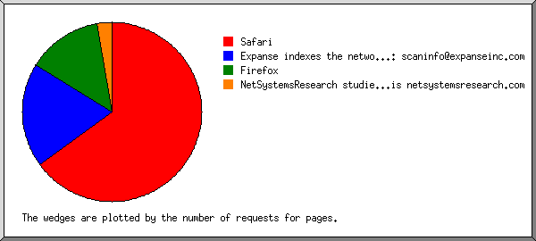
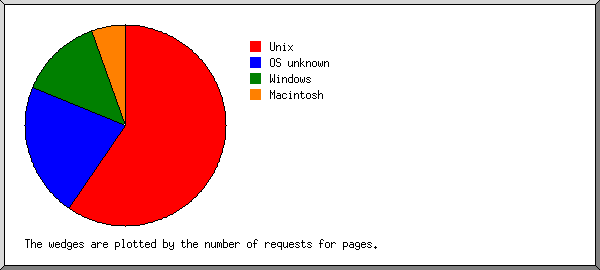
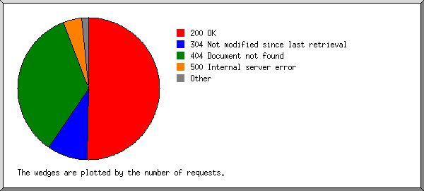
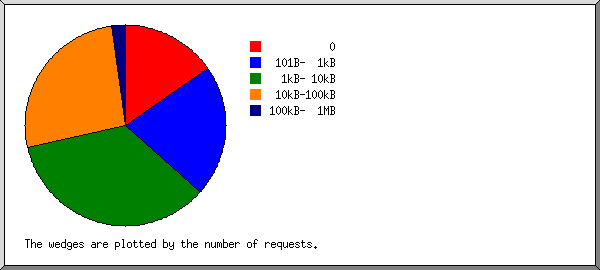
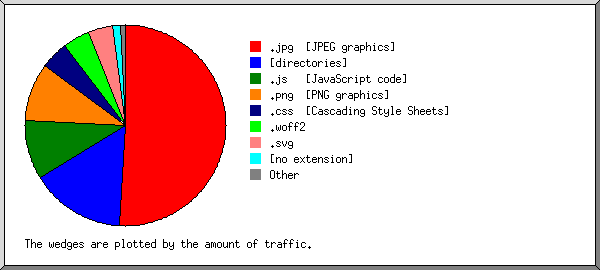
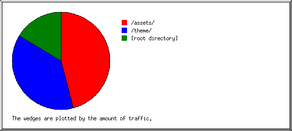
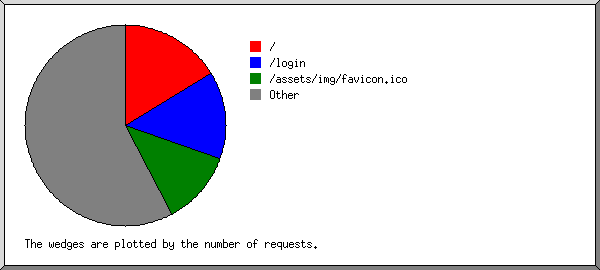

Web Server Statistics for pricing.mamakriau.com
Web Server Statistics for pricing.mamakriau.com
Program started on Tue, Apr 13 2021 at 8:04 PM.
Analyzed requests from Sat, Mar 06 2021 at 9:05 PM to Mon, Apr 12 2021 at 11:15 PM (37.09 days).
Web Server Statistics for pricing.mamakriau.comProgram started on Tue, Apr 13 2021 at 8:04 PM.
Analyzed requests from Sat, Mar 06 2021 at 9:05 PM to Mon, Apr 12 2021 at 11:15 PM (37.09 days).
(Go To: Top | General Summary | Monthly Report | Daily Summary | Hourly Summary | Domain Report | Organization Report | Redirected Referrer Report | Failed Referrer Report | Referring Site Report | Browser Report | Browser Summary | Operating System Report | Status Code Report | File Size Report | File Type Report | Directory Report | Request Report)
Figures in parentheses refer to the 7-day period ending Apr 13 2021 at 8:04 PM.
Successful requests: 227 (0)
Average successful requests per day: 6
Successful requests for pages: 37 (0)
Failed requests: 150 (0)
Redirected requests: 5 (1)
Distinct files requested: 43 (114)
Distinct hosts served: 15 (28)
Data transferred: 2.86 megabytes (0 bytes)
Average data transferred per day: 78.99 kilobytes (0 bytes)
(Go To: Top | General Summary | Monthly Report | Daily Summary | Hourly Summary | Domain Report | Organization Report | Redirected Referrer Report | Failed Referrer Report | Referring Site Report | Browser Report | Browser Summary | Operating System Report | Status Code Report | File Size Report | File Type Report | Directory Report | Request Report)
Each unit ( ) represents 1 request for a page.
) represents 1 request for a page.
| month | #reqs | #pages | |
|---|---|---|---|
| Mar 2021 | 227 | 37 |   |
Busiest month: Mar 2021 (37 requests for pages).
(Go To: Top | General Summary | Monthly Report | Daily Summary | Hourly Summary | Domain Report | Organization Report | Redirected Referrer Report | Failed Referrer Report | Referring Site Report | Browser Report | Browser Summary | Operating System Report | Status Code Report | File Size Report | File Type Report | Directory Report | Request Report)
Each unit () represents 1 request for a page.
| day | #reqs | #pages | |
|---|---|---|---|
| Sun | 213 | 23 |   |
| Mon | 1 | 1 | |
| Tue | 4 | 4 | |
| Wed | 1 | 1 | |
| Thu | 3 | 3 | |
| Fri | 2 | 2 | |
| Sat | 3 | 3 | |
(Go To: Top | General Summary | Monthly Report | Daily Summary | Hourly Summary | Domain Report | Organization Report | Redirected Referrer Report | Failed Referrer Report | Referring Site Report | Browser Report | Browser Summary | Operating System Report | Status Code Report | File Size Report | File Type Report | Directory Report | Request Report)
Each unit () represents 1 request for a page.
| hour | #reqs | #pages | |
|---|---|---|---|
| 0 | 2 | 2 | |
| 1 | 2 | 2 | |
| 2 | 0 | 0 | |
| 3 | 0 | 0 | |
| 4 | 2 | 2 | |
| 5 | 1 | 1 | |
| 6 | 0 | 0 | |
| 7 | 0 | 0 | |
| 8 | 1 | 1 | |
| 9 | 0 | 0 | |
| 10 | 64 | 10 |  |
| 11 | 91 | 10 | |
| 12 | 17 | 0 | |
| 13 | 0 | 0 | |
| 14 | 0 | 0 | |
| 15 | 1 | 1 | |
| 16 | 0 | 0 | |
| 17 | 38 | 1 | |
| 18 | 3 | 3 | |
| 19 | 2 | 2 | |
| 20 | 0 | 0 | |
| 21 | 3 | 2 | |
| 22 | 0 | 0 | |
| 23 | 0 | 0 |
(Go To: Top | General Summary | Monthly Report | Daily Summary | Hourly Summary | Domain Report | Organization Report | Redirected Referrer Report | Failed Referrer Report | Referring Site Report | Browser Report | Browser Summary | Operating System Report | Status Code Report | File Size Report | File Type Report | Directory Report | Request Report)
Listing domains, sorted by the amount of traffic.
| #reqs | %bytes | domain |
|---|---|---|
| 227 | 100% | [unresolved numerical addresses] |
(Go To: Top | General Summary | Monthly Report | Daily Summary | Hourly Summary | Domain Report | Organization Report | Redirected Referrer Report | Failed Referrer Report | Referring Site Report | Browser Report | Browser Summary | Operating System Report | Status Code Report | File Size Report | File Type Report | Directory Report | Request Report)

Listing organizations, sorted by the number of requests.
| #reqs | %bytes | organization |
|---|---|---|
| 176 | 87.60% | 36 |
| 35 | 125 | |
| 8 | 6.64% | 34 |
| 2 | 1.84% | 51 |
| 1 | 0.92% | 62.210 |
| 1 | 0.03% | 54 |
| 1 | 0.92% | 62.4 |
| 1 | 0.92% | 92 |
| 1 | 0.92% | 212.83 |
| 1 | 0.20% | 192.46 |
(Go To: Top | General Summary | Monthly Report | Daily Summary | Hourly Summary | Domain Report | Organization Report | Redirected Referrer Report | Failed Referrer Report | Referring Site Report | Browser Report | Browser Summary | Operating System Report | Status Code Report | File Size Report | File Type Report | Directory Report | Request Report)
Listing referring URLs, sorted by the number of redirected requests.
| #reqs | URL |
|---|---|
| 1 | http://pricing.mamakriau.com/ |
(Go To: Top | General Summary | Monthly Report | Daily Summary | Hourly Summary | Domain Report | Organization Report | Redirected Referrer Report | Failed Referrer Report | Referring Site Report | Browser Report | Browser Summary | Operating System Report | Status Code Report | File Size Report | File Type Report | Directory Report | Request Report)

Listing referring URLs, sorted by the number of failed requests.
(Go To: Top | General Summary | Monthly Report | Daily Summary | Hourly Summary | Domain Report | Organization Report | Redirected Referrer Report | Failed Referrer Report | Referring Site Report | Browser Report | Browser Summary | Operating System Report | Status Code Report | File Size Report | File Type Report | Directory Report | Request Report)

Listing referring sites, sorted by the number of requests.
| #reqs | site |
|---|---|
| 158 | https://www.pricing.mamakriau.com/ |
| 2 | https://mail.google.com/ |
| 1 | https://pricing.mamakriau.com/ |
(Go To: Top | General Summary | Monthly Report | Daily Summary | Hourly Summary | Domain Report | Organization Report | Redirected Referrer Report | Failed Referrer Report | Referring Site Report | Browser Report | Browser Summary | Operating System Report | Status Code Report | File Size Report | File Type Report | Directory Report | Request Report)

Listing browsers with at least 1 request for a page, sorted by the number of requests for pages.
| #reqs | #pages | browser |
|---|---|---|
| 95 | 17 | Mozilla/5.0 (X11; Linux x86_64) AppleWebKit/537.36 (KHTML, like Gecko) Chrome/89.0.4389.82 Safari/537.36 |
| 7 | 7 | Expanse indexes the network perimeters of our customers. If you have any questions or concerns, please reach out to: scaninfo@expanseinc.com |
| 5 | 5 | Mozilla/5.0 (X11; Ubuntu; Linux x86_64; rv:58.0) Gecko/20100101 Firefox/58.0 |
| 2 | 2 | Mozilla/5.0 (Macintosh; U; Intel Mac OS X 10_6_8; en-us) AppleWebKit/534.50 (KHTML, like Gecko) Version/5.1 Safari/534.50 |
| 28 | 2 | Mozilla/5.0 (Windows NT 10.0; Win64; x64) AppleWebKit/537.36 (KHTML, like Gecko) Chrome/89.0.4389.82 Safari/537.36 |
| 53 | 2 | Mozilla/5.0 (Windows NT 10.0; Win64; x64) AppleWebKit/537.36 (KHTML, like Gecko) Chrome/89.0.4389.72 Safari/537.36 Edg/89.0.774.45 |
| 1 | 1 | NetSystemsResearch studies the availability of various services across the internet. Our website is netsystemsresearch.com |
| 1 | 1 | Mozilla/5.0 (Windows NT 10.0; Win64; x64) AppleWebKit/537.36 (KHTML, like Gecko) Chrome/88.0.4324.150 Safari/537.36 |
| 35 | 0 | [not listed: 1 browser] |
(Go To: Top | General Summary | Monthly Report | Daily Summary | Hourly Summary | Domain Report | Organization Report | Redirected Referrer Report | Failed Referrer Report | Referring Site Report | Browser Report | Browser Summary | Operating System Report | Status Code Report | File Size Report | File Type Report | Directory Report | Request Report)

Listing browsers with at least 1 request for a page, sorted by the number of requests for pages.
| # | #reqs | #pages | browser |
|---|---|---|---|
| 1 | 214 | 24 | Safari |
| 212 | 22 | Safari/537 | |
| 2 | 2 | Safari/534 | |
| 2 | 7 | 7 | Expanse indexes the network perimeters of our customers. If you have any questions or concerns, please reach out to: scaninfo@expanseinc.com |
| 3 | 5 | 5 | Firefox |
| 5 | 5 | Firefox/58 | |
| 4 | 1 | 1 | NetSystemsResearch studies the availability of various services across the internet. Our website is netsystemsresearch.com |
(Go To: Top | General Summary | Monthly Report | Daily Summary | Hourly Summary | Domain Report | Organization Report | Redirected Referrer Report | Failed Referrer Report | Referring Site Report | Browser Report | Browser Summary | Operating System Report | Status Code Report | File Size Report | File Type Report | Directory Report | Request Report)

Listing operating systems, sorted by the number of requests for pages.
| # | #reqs | #pages | OS |
|---|---|---|---|
| 1 | 100 | 22 | Unix |
| 100 | 22 | Linux | |
| 2 | 8 | 8 | OS unknown |
| 3 | 117 | 5 | Windows |
| 117 | 5 | Windows NT | |
| 4 | 2 | 2 | Macintosh |
(Go To: Top | General Summary | Monthly Report | Daily Summary | Hourly Summary | Domain Report | Organization Report | Redirected Referrer Report | Failed Referrer Report | Referring Site Report | Browser Report | Browser Summary | Operating System Report | Status Code Report | File Size Report | File Type Report | Directory Report | Request Report)

Listing status codes, sorted numerically.
| #reqs | status code |
|---|---|
| 192 | 200 OK |
| 3 | 301 Document moved permanently |
| 2 | 302 Document found elsewhere |
| 35 | 304 Not modified since last retrieval |
| 1 | 403 Access forbidden |
| 133 | 404 Document not found |
| 16 | 500 Internal server error |
(Go To: Top | General Summary | Monthly Report | Daily Summary | Hourly Summary | Domain Report | Organization Report | Redirected Referrer Report | Failed Referrer Report | Referring Site Report | Browser Report | Browser Summary | Operating System Report | Status Code Report | File Size Report | File Type Report | Directory Report | Request Report)

| size | #reqs | %bytes |
|---|---|---|
| 0 | 35 | |
| 1B- 10B | 0 | |
| 11B- 100B | 0 | |
| 101B- 1kB | 48 | 1.30% |
| 1kB- 10kB | 79 | 8.31% |
| 10kB-100kB | 60 | 50.20% |
| 100kB- 1MB | 5 | 40.19% |
(Go To: Top | General Summary | Monthly Report | Daily Summary | Hourly Summary | Domain Report | Organization Report | Redirected Referrer Report | Failed Referrer Report | Referring Site Report | Browser Report | Browser Summary | Operating System Report | Status Code Report | File Size Report | File Type Report | Directory Report | Request Report)

Listing extensions with at least 0.1% of the traffic, sorted by the amount of traffic.
| #reqs | %bytes | extension |
|---|---|---|
| 23 | 50.87% | .jpg [JPEG graphics] |
| 37 | 15.27% | [directories] |
| 32 | 9.58% | .js [JavaScript code] |
| 37 | 9.41% | .png [PNG graphics] |
| 24 | 4.55% | .css [Cascading Style Sheets] |
| 5 | 4.31% | .woff2 |
| 10 | 4.02% | .svg |
| 32 | 1.21% | [no extension] |
| 27 | 0.77% | .ico |
(Go To: Top | General Summary | Monthly Report | Daily Summary | Hourly Summary | Domain Report | Organization Report | Redirected Referrer Report | Failed Referrer Report | Referring Site Report | Browser Report | Browser Summary | Operating System Report | Status Code Report | File Size Report | File Type Report | Directory Report | Request Report)

Listing directories with at least 0.01% of the traffic, sorted by the amount of traffic.
| #reqs | %bytes | directory |
|---|---|---|
| 123 | 45.97% | /assets/ |
| 35 | 37.56% | /theme/ |
| 69 | 16.47% | [root directory] |
(Go To: Top | General Summary | Monthly Report | Daily Summary | Hourly Summary | Domain Report | Organization Report | Redirected Referrer Report | Failed Referrer Report | Referring Site Report | Browser Report | Browser Summary | Operating System Report | Status Code Report | File Size Report | File Type Report | Directory Report | Request Report)

Listing files with at least 20 requests, sorted by the number of requests.
| #reqs | %bytes | last time | file |
|---|---|---|---|
| 37 | 15.27% | Mar/29/21 12:42 AM | / |
| 32 | 1.21% | Mar/ 7/21 9:48 PM | /login |
| 27 | 0.77% | Mar/21/21 5:48 PM | /assets/img/favicon.ico |
| 131 | 82.75% | Mar/21/21 5:48 PM | [not listed: 37 files] |